Motif analysis using topic modeling results for Buenrostro et al (2018) scATAC-seq result (data processed using chromVAR processed counts on peaks called from Chen 2019)
Kaixuan Luo
Last updated: 2021-01-28
Checks: 7 0
Knit directory: scATACseq-topics/
This reproducible R Markdown analysis was created with workflowr (version 1.6.2). The Checks tab describes the reproducibility checks that were applied when the results were created. The Past versions tab lists the development history.
Great! Since the R Markdown file has been committed to the Git repository, you know the exact version of the code that produced these results.
Great job! The global environment was empty. Objects defined in the global environment can affect the analysis in your R Markdown file in unknown ways. For reproduciblity it's best to always run the code in an empty environment.
The command set.seed(20200729) was run prior to running the code in the R Markdown file. Setting a seed ensures that any results that rely on randomness, e.g. subsampling or permutations, are reproducible.
Great job! Recording the operating system, R version, and package versions is critical for reproducibility.
Nice! There were no cached chunks for this analysis, so you can be confident that you successfully produced the results during this run.
Great job! Using relative paths to the files within your workflowr project makes it easier to run your code on other machines.
Great! You are using Git for version control. Tracking code development and connecting the code version to the results is critical for reproducibility.
The results in this page were generated with repository version 45ac760. See the Past versions tab to see a history of the changes made to the R Markdown and HTML files.
Note that you need to be careful to ensure that all relevant files for the analysis have been committed to Git prior to generating the results (you can use wflow_publish or wflow_git_commit). workflowr only checks the R Markdown file, but you know if there are other scripts or data files that it depends on. Below is the status of the Git repository when the results were generated:
Ignored files:
Ignored: .Rhistory
Ignored: .Rproj.user/
Untracked files:
Untracked: analysis/diff_count_Buenrostro2018_chomVAR_scPeaks.Rmd
Untracked: analysis/process_data_Buenrostro2018_Chen2019.Rmd
Untracked: analysis/single_cell_rnaseq_demo.Rmd
Untracked: output/Cusanovich2018/
Untracked: output/clustering-Cusanovich2018.rds
Untracked: output/gsea_topic_1_Cusanovich2018-k=13-TSS-sum.html
Untracked: output/gsea_topic_1_Cusanovich2018-k=13-TSS-sum.png
Untracked: output/gsea_topic_1_Cusanovich2018-k=13-TSS-sum_files/
Untracked: output/gsea_topic_1_Cusanovich2018-k=13-genebody-sum.html
Untracked: output/gsea_topic_1_Cusanovich2018-k=13-genebody-sum.png
Untracked: output/gsea_topic_1_Cusanovich2018-k=13-genebody-sum_files/
Untracked: output/plotly/
Untracked: output/volcano_topic_1_Cusanovich2018-k=13-TSS-sum.html
Untracked: output/volcano_topic_1_Cusanovich2018-k=13-TSS-sum.png
Untracked: output/volcano_topic_1_Cusanovich2018-k=13-TSS-sum_files/
Untracked: output/volcano_topic_1_Cusanovich2018-k=13-genebody-sum.html
Untracked: output/volcano_topic_1_Cusanovich2018-k=13-genebody-sum.png
Untracked: output/volcano_topic_1_Cusanovich2018-k=13-genebody-sum_files/
Untracked: scripts/fit_all_models_Buenrostro_2018_chromVar_scPeaks_filtered.sbatch
Untracked: scripts/postfit_Buenrostro2018_Chen2019pipeline.sh
Untracked: scripts/postfit_Buenrostro2018_chromVar_scPeaks.sh
Untracked: scripts/postfit_Buenrostro2018_chromVar_scPeaks_filtered.sh
Unstaged changes:
Modified: analysis/cisTopic_Buenrostro2018_chomVAR_scPeaks.Rmd
Modified: analysis/motif_analysis_Buenrostro2018_Chen2019pipeline.Rmd
Modified: analysis/motif_gene_analysis_Cusanovich2018.Rmd
Modified: analysis/plots_Lareau2019_bonemarrow.Rmd
Modified: scripts/fit_all_models_Buenrostro_2018.sbatch
Modified: scripts/fit_cisTopic_Buenrostro_2018_chromVAR_scPeaks.sh
Modified: scripts/postfit_Buenrostro2018.sh
Modified: scripts/postfit_Cusanovich2018.sh
Modified: scripts/postfit_gene_analysis.sbatch
Note that any generated files, e.g. HTML, png, CSS, etc., are not included in this status report because it is ok for generated content to have uncommitted changes.
These are the previous versions of the repository in which changes were made to the R Markdown (analysis/motif_analysis_Buenrostro2018_chomVAR_scPeaks.Rmd) and HTML (docs/motif_analysis_Buenrostro2018_chomVAR_scPeaks.html) files. If you've configured a remote Git repository (see ?wflow_git_remote), click on the hyperlinks in the table below to view the files as they were in that past version.
| File | Version | Author | Date | Message |
|---|---|---|---|---|
| Rmd | 45ac760 | kevinlkx | 2021-01-28 | minor changes on the figure sizes |
| html | ac9ee61 | kevinlkx | 2021-01-28 | Build site. |
| Rmd | c6c8074 | kevinlkx | 2021-01-28 | motif analysis for Buenrostro2018 using chomVAR scPeaks, and topic 4 examples |
Here we perform TF motif analysis for the Buenrostro et al (2018) scATAC-seq result inferred from the multinomial topic model with \(k = 11\).
We use binarized scPeaks and scATAC-seq data was processed using Chen et al (2019) pipeline.
Load packages and some functions used in this analysis
library(Matrix)
library(fastTopics)
library(dplyr)
library(tidyr)
library(ggplot2)
library(ggrepel)
library(cowplot)
library(plotly)
library(htmlwidgets)
library(DT)
library(reshape2)
library(Logolas)
library(grid)
source("code/motif_analysis.R")
source("code/plots.R")Load data and topic model results
Load the binarized data and the \(k = 11\) Poisson NMF fit results from Buenrostro et al 2018 dataset using binarized scPeaks based on chromVAR processed counts with peaks accessible in at least 1 sample.
data.dir <- "/project2/mstephens/kevinluo/scATACseq-topics/data/Buenrostro_2018/processed_data_Chen2019pipeline/chromVAR/"
load(file.path(data.dir, "Buenrostro_2018_binarized_scPeaks.RData"))
cat(sprintf("%d x %d counts matrix.\n",nrow(counts),ncol(counts)))# 2034 x 228965 counts matrix.fit.dir <- "/project2/mstephens/kevinluo/scATACseq-topics/output/Buenrostro_2018_chromVAR_scPeaks/binarized/"
fit <- readRDS(file.path(fit.dir, "/fit-Buenrostro2018-binarized-scd-ex-k=11.rds"))$fit
fit_multinom <- poisson2multinom(fit)Visualize by Structure plot grouped by cell labels.
set.seed(10)
colors_topics <- c("#a6cee3","#1f78b4","#b2df8a","#33a02c","#fb9a99","#e31a1c",
"#fdbf6f","#ff7f00","#cab2d6","#6a3d9a","#ffff99","#b15928",
"gray")
samples$label <- as.factor(samples$label)
p.structure <- structure_plot(fit_multinom,
grouping = samples[, "label"],n = Inf,gap = 40,
perplexity = 50,topics = 1:11,colors = colors_topics,
num_threads = 4,verbose = FALSE)
print(p.structure)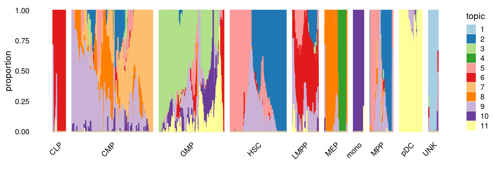
| Version | Author | Date |
|---|---|---|
| ac9ee61 | kevinlkx | 2021-01-28 |
Differential accessbility analysis of the ATAC-seq regions for the topics
Load results from differential accessbility analysis for the topics
out.dir <- "/project2/mstephens/kevinluo/scATACseq-topics/output/Buenrostro_2018_chromVAR_scPeaks/binarized/"
cat(sprintf("Load results from %s \n", out.dir))# Load results from /project2/mstephens/kevinluo/scATACseq-topics/output/Buenrostro_2018_chromVAR_scPeaks/binarized/diff_count_topics <- readRDS(file.path(out.dir, "diffcount-Buenrostro2018-11topics.rds"))Distribution of z-scores
zscore_topics <- melt(diff_count_topics$Z)
colnames(zscore_topics) <- c("region", "topic", "zscore")
levels(zscore_topics$topic) <- colnames(diff_count_topics$Z)
z.quantile.99 <- apply(abs(diff_count_topics$Z), 2, quantile, 0.99)
cat("z-score 99% quantile: \n")
print(z.quantile.99)
p.hist.zscores <- ggplot(zscore_topics, aes(x=zscore)) +
geom_histogram(binwidth=1, color="black", fill="white") +
coord_cartesian(xlim = c(-10, 30)) + theme_cowplot(font_size = 10) +
facet_wrap(~ topic, ncol=4)
print(p.hist.zscores)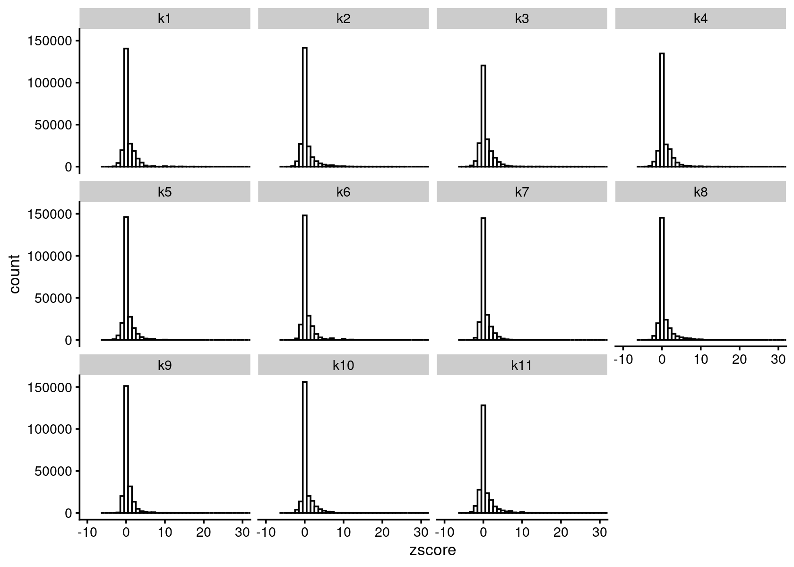
| Version | Author | Date |
|---|---|---|
| ac9ee61 | kevinlkx | 2021-01-28 |
# z-score 99% quantile:
# k1 k2 k3 k4 k5 k6 k7 k8
# 5.429064 7.020322 5.828474 6.308036 6.161995 6.931451 4.862751 7.977127
# k9 k10 k11
# 6.756263 6.858868 9.739615Volcano plot of the regions
topic 4 example
volcano_plot(diff_count_topics,k = 4,label_above_quantile = Inf,
subsample_below_quantile = 0.7, subsample_rate = 0.1)# 84719 out of 228965 data points will be included in plot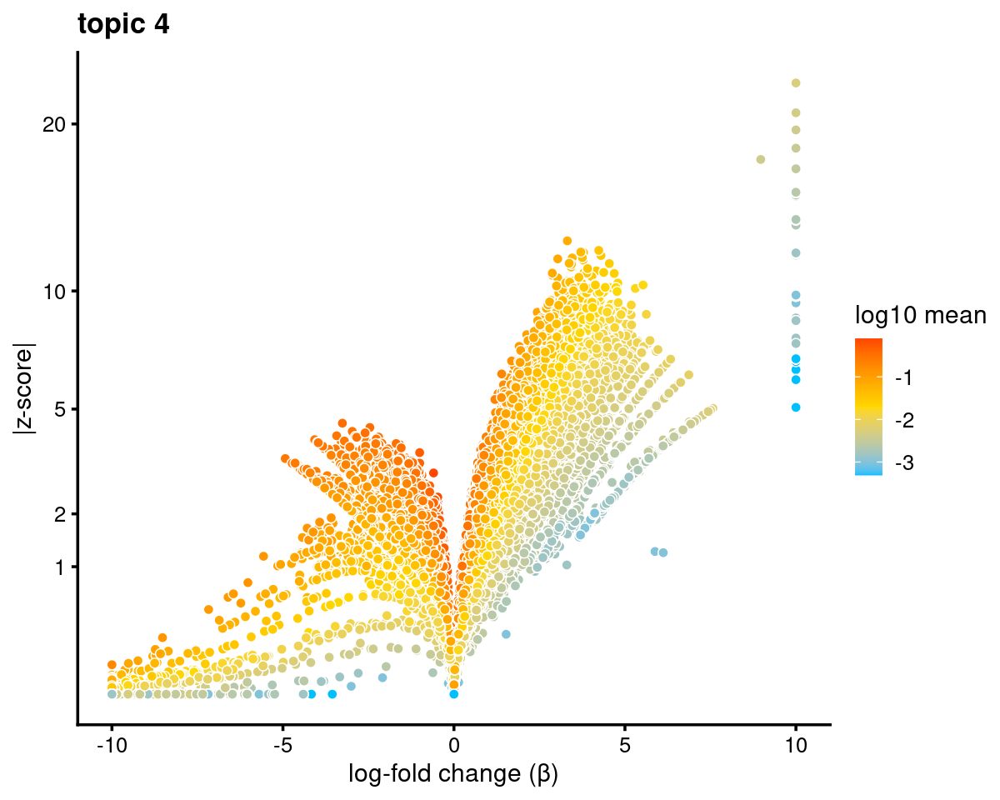
| Version | Author | Date |
|---|---|---|
| ac9ee61 | kevinlkx | 2021-01-28 |
Motif enrichment analysis using HOMER
- Details about HOMER motif analysis:
- Motif enrichment result using regions with z-score above 99% quantile.
Compile Homer results across topics
homer.dir <- paste0(out.dir, "/motifanalysis-Buenrostro2018-k=11-quantile/HOMER/")
cat(sprintf("Directory of motif analysis result: %s \n", homer.dir))
homer_res_topics <- readRDS(file.path(homer.dir, "/homer_knownResults.rds"))
selected_regions <- readRDS(file.path(homer.dir, "/selected_regions.rds"))
# Compile Homer results (pvalue and ranking) across topics
motif_res <- compile_homer_motif_res(homer_res_topics)
saveRDS(motif_res, paste0(homer.dir, "/homer_motif_enrichment_results.rds"))
cat("compiled homer motif results are saved in", paste0(homer.dir, "/homer_motif_enrichment_results.rds"))
motif_table <- data.frame(motif = gsub("/.*", "", rownames(motif_res$mlog10P)),
round(motif_res$mlog10P,2))
DT::datatable(motif_table, rownames = F, caption = "Motif enrichment (-log10P)")# Directory of motif analysis result: /project2/mstephens/kevinluo/scATACseq-topics/output/Buenrostro_2018_chromVAR_scPeaks/binarized//motifanalysis-Buenrostro2018-k=11-quantile/HOMER/
# compiled homer motif results are saved in /project2/mstephens/kevinluo/scATACseq-topics/output/Buenrostro_2018_chromVAR_scPeaks/binarized//motifanalysis-Buenrostro2018-k=11-quantile/HOMER//homer_motif_enrichment_results.rdsTop 10 motifs in each topic
cat("Number of regions selected for each topic: \n")
print(mapply(nrow, selected_regions[1:(length(selected_regions)-1)]))
colnames_homer <- c("motif_name", "consensus", "P", "log10P", "Padj", "num_target", "percent_target", "num_bg", "percent_bg")
top_motifs <- data.frame(matrix(nrow=10, ncol = length(homer_res_topics)))
colnames(top_motifs) <- names(homer_res_topics)
for (k in 1:length(homer_res_topics)){
homer_res <- homer_res_topics[[k]]
colnames(homer_res) <- colnames_homer
homer_res <- homer_res %>% separate(motif_name, c("motif", "origin", "database"), "/")
top_motifs[,k] <- head(homer_res$motif, 10)
}
DT::datatable(data.frame(rank = 1:10, top_motifs), rownames = F, caption = "Top 10 motifs enriched in each topic.")# Number of regions selected for each topic:
# k1 k2 k3 k4 k5 k6 k7 k8 k9 k10 k11
# 2290 2290 2290 2290 2253 2258 2290 2290 2278 2264 2289Heatmap of motif enrichment across topics
Heatmap of motif enrichment -log10(p-value). Order motifs by hierarchical clustering.
create_motif_enrichment_heatmap(motif_res, enrichment = "-log10(p-value)",
cluster_motifs = TRUE, cluster_topics = FALSE, motif_filter = 50,
enrichment_range = c(0,100), method_cluster = "average",
font.size.motifs = 5, font.size.topics = 9)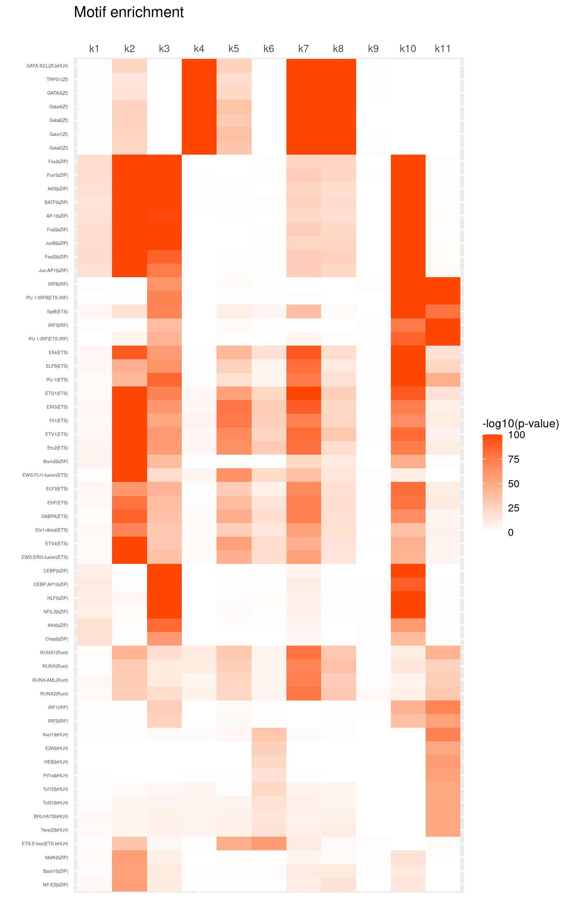
| Version | Author | Date |
|---|---|---|
| ac9ee61 | kevinlkx | 2021-01-28 |
# 61 out of 439 motifs included the heatmapHeatmap of motif enrichment z-score. Order motifs by hierarchical clustering.
create_motif_enrichment_heatmap(motif_res, enrichment = "z-score",
cluster_motifs = TRUE, cluster_topics = FALSE, motif_filter = 10,
enrichment_range = c(-20,20), method_cluster = "average",
font.size.motifs = 5, font.size.topics = 9)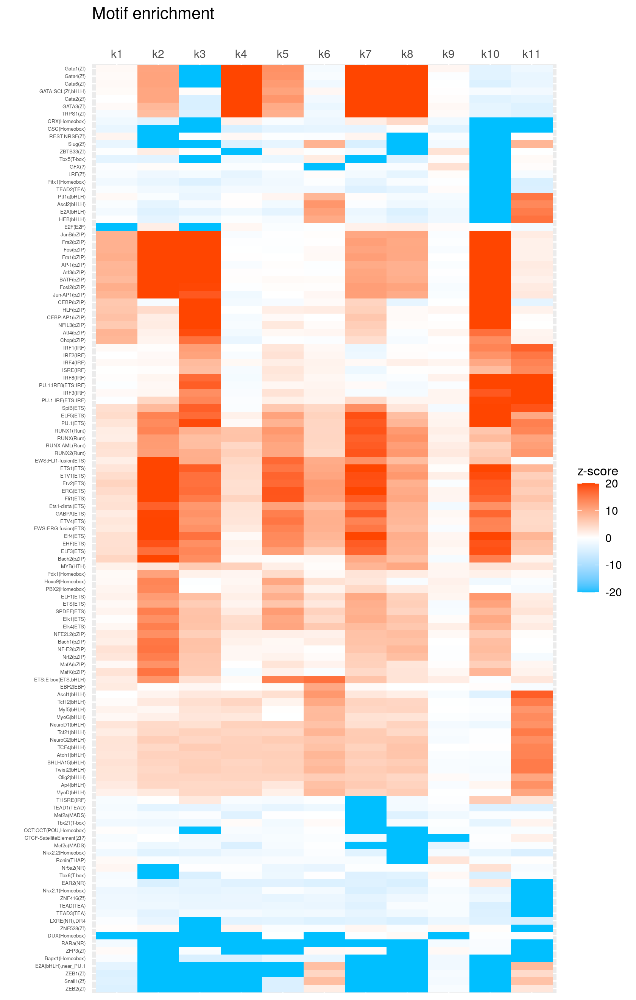
| Version | Author | Date |
|---|---|---|
| ac9ee61 | kevinlkx | 2021-01-28 |
# 123 out of 439 motifs included the heatmapScatterplots of motif enrichment
# Plot enrichment (-log10 p-value) and ranking of the motifs
plots <- vector("list", ncol(motif_res$mlog10P))
names(plots) <- colnames(motif_res$mlog10P)
for( i in 1:length(plots)){
plots[[i]] <- create_motif_enrichment_ranking_plot(motif_res, k = i,
max.overlaps = 20, subsample = FALSE)
}
# do.call(plot_grid,plots)- Plot motif enrichment (-log10 p-value) and the ranking
Topic 4 example
print(plots[[4]])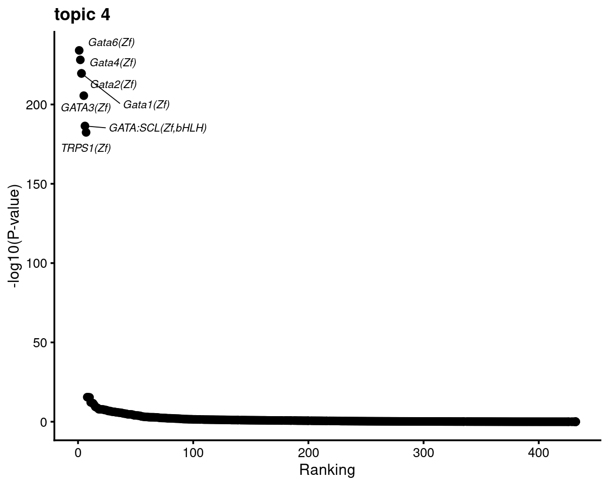
| Version | Author | Date |
|---|---|---|
| ac9ee61 | kevinlkx | 2021-01-28 |
# Plot motif enrichment (-log10 p-value) in each topic vs other topics
plots <- vector("list", ncol(motif_res$mlog10P))
names(plots) <- colnames(motif_res$mlog10P)
for( i in 1:length(homer_res_topics)){
plots[[i]] <- create_motif_enrichment_plot(motif_res, k = i,
max.overlaps = 20, subsample = TRUE)
}
# do.call(plot_grid,plots)- Plot motif enrichment (-log10 p-value) in topic 4 vs other topics
print(plots[[4]])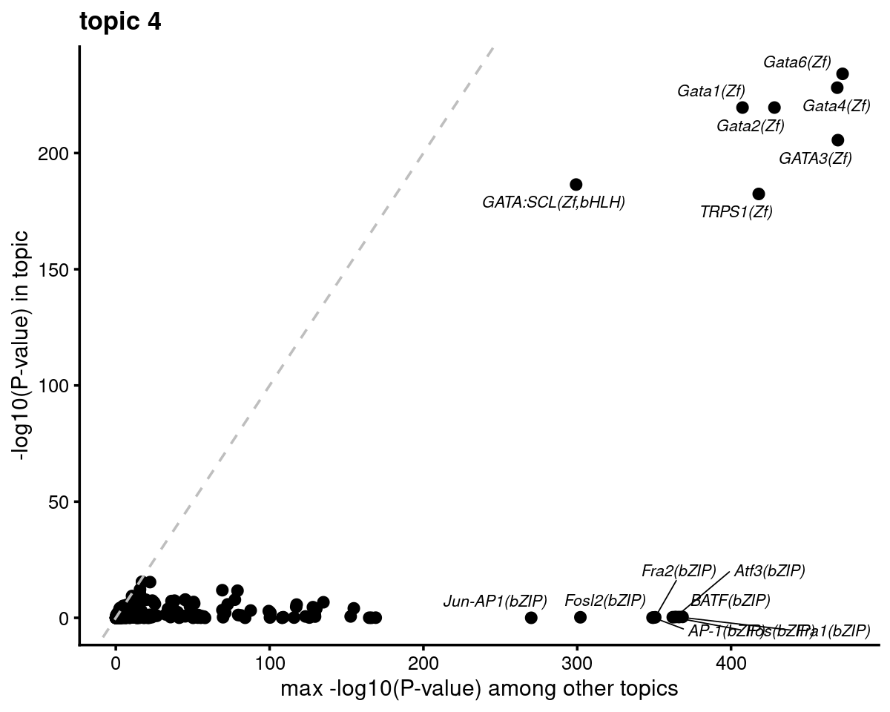
| Version | Author | Date |
|---|---|---|
| ac9ee61 | kevinlkx | 2021-01-28 |
Motif enrichment vs gene score
Load pre-computed gene scores
gene.dir <- paste0(out.dir, "/geneanalysis-Buenrostro2018-k=11-TSS-l2")
cat(sprintf("Directory of gene analysis result: %s \n", gene.dir))
genescore_res <- readRDS(file.path(gene.dir, "genescore_result_topics.rds"))
genes <- genescore_res$genes
gene_scores <- genescore_res$Z
rownames(gene_scores) <- genes$SYMBOL
gene_logFC <- genescore_res$beta
rownames(gene_logFC) <- genes$SYMBOL# Directory of gene analysis result: /project2/mstephens/kevinluo/scATACseq-topics/output/Buenrostro_2018_chromVAR_scPeaks/binarized//geneanalysis-Buenrostro2018-k=11-TSS-l2Get TF genes
motif_names <- gsub("\\s*\\(.*", "", motif_res$motifs$motif)
gene_names <- genes$SYMBOL
TF_genes <- intersect(toupper(motif_names), toupper(gene_names))
cat(sprintf("%s TF genes mapped between motif names and gene symbol. \n", length(TF_genes)))# 267 TF genes mapped between motif names and gene symbol.Compute correlation between motif enrichment z-score and gene score:
Topic 4 example
- Compute motif enrichment z-scores from the motif enrichment p-values
- Plot motif enrichment (-log10 p-value) and correlation between motif enrichment z-scores and gene scores
- Rank motifs by motif enrichment (-log10 p-value) and correlation between motif enrichment z-score and gene scores
motif_gene_mapping <- create_motif_gene_cor_scatterplot(motif_res, gene_scores, motif_names, gene_names, TF_genes,
k = 4, cor.motif = "z-score")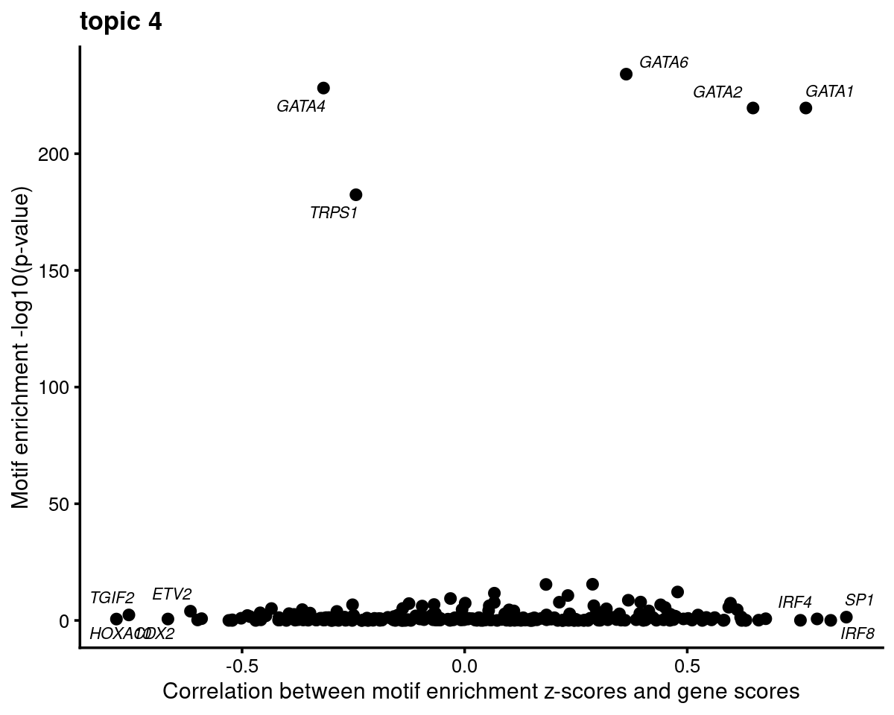
| Version | Author | Date |
|---|---|---|
| ac9ee61 | kevinlkx | 2021-01-28 |
motif_gene_mapping <- motif_gene_mapping[with(motif_gene_mapping, order(motif_mlog10P*cor_zscore, decreasing = T)),]
rownames(motif_gene_mapping) <- 1:nrow(motif_gene_mapping)
cat("Top 10 motifs by motif enrichment (-log10 p-value) and correlation to gene scores: \n")
print(head(motif_gene_mapping[,c("motif","motif_mlog10P", "gene_score", "cor_zscore")], 10))# Top 10 motifs by motif enrichment (-log10 p-value) and correlation to gene scores:
# motif motif_mlog10P gene_score cor_zscore
# 1 Gata1(Zf) 219.579290 8.3244519 0.7665240
# 2 Gata2(Zf) 219.579290 2.1724650 0.6478183
# 3 Gata6(Zf) 234.084726 1.7322182 0.3629485
# 4 KLF1(Zf) 12.190646 5.6577909 0.4783887
# 5 KLF6(Zf) 15.495627 -1.7445598 0.2873485
# 6 NeuroG2(bHLH) 7.396035 -0.8245259 0.5971054
# 7 KLF14(Zf) 5.663200 -0.1186964 0.5932942
# 8 Klf4(Zf) 8.659832 -2.0097104 0.3676572
# 9 Atoh1(bHLH) 7.869416 0.3937002 0.3953305
# 10 Fli1(ETS) 6.701164 0.9486844 0.4402514- Plot motif enrichment (-log10 p-value) and correlation between motif enrichment (-log10 p-value) and gene scores
- Rank motifs by motif enrichment (-log10 p-value) and correlation between motif enrichment (-log10 p-value) and gene scores
motif_gene_mapping <- create_motif_gene_cor_scatterplot(motif_res, gene_scores, motif_names, gene_names, TF_genes,
k = 4, cor.motif = "-log10(p-value)")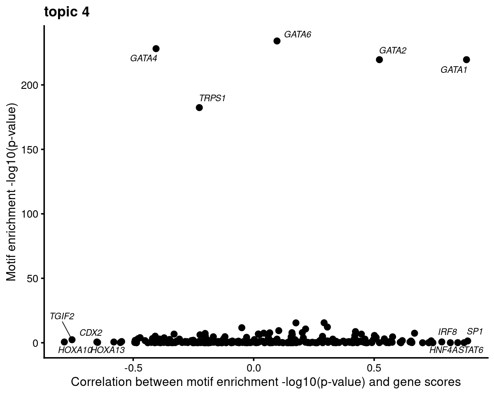
| Version | Author | Date |
|---|---|---|
| ac9ee61 | kevinlkx | 2021-01-28 |
motif_gene_mapping <- motif_gene_mapping[with(motif_gene_mapping, order(motif_mlog10P*cor_mlog10P, decreasing = T)),]
rownames(motif_gene_mapping) <- 1:nrow(motif_gene_mapping)
cat("Top 10 motifs by motif enrichment (-log10 p-value) and correlation to gene scores: \n")
print(head(motif_gene_mapping[,c("motif","motif_mlog10P", "gene_score", "cor_mlog10P")], 10))# Top 10 motifs by motif enrichment (-log10 p-value) and correlation to gene scores:
# motif motif_mlog10P gene_score cor_mlog10P
# 1 Gata1(Zf) 219.579290 8.3244519 0.88323934
# 2 Gata2(Zf) 219.579290 2.1724650 0.52186829
# 3 Gata6(Zf) 234.084726 1.7322182 0.09683799
# 4 NeuroG2(bHLH) 7.396035 -0.8245259 0.66766508
# 5 KLF6(Zf) 15.495627 -1.7445598 0.29226850
# 6 KLF1(Zf) 12.190646 5.6577909 0.30597257
# 7 Klf4(Zf) 8.659832 -2.0097104 0.42244343
# 8 Fli1(ETS) 6.701164 0.9486844 0.44702221
# 9 KLF14(Zf) 5.663200 -0.1186964 0.50113428
# 10 KLF5(Zf) 15.417454 1.5521702 0.17537941GATA family
GATA_genes <- grep("^GATA\\d*$", TF_genes, ignore.case=T, value=T)Plot GATA motifs in topic 4
k = 4
selected_motifs <- rownames(motif_res$motifs)[match(toupper(GATA_genes), toupper(motif_names))]
motif.dir <- paste0(homer.dir, "/homer_result_topic_", k, "/knownResults/")
for (i in 1:length(selected_motifs)){
plot_motif_logo(homer_res_topics, selected_motifs[i], k, motif.dir, type = "both")
}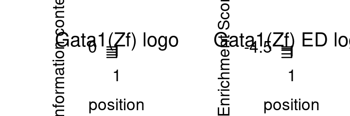
| Version | Author | Date |
|---|---|---|
| ac9ee61 | kevinlkx | 2021-01-28 |
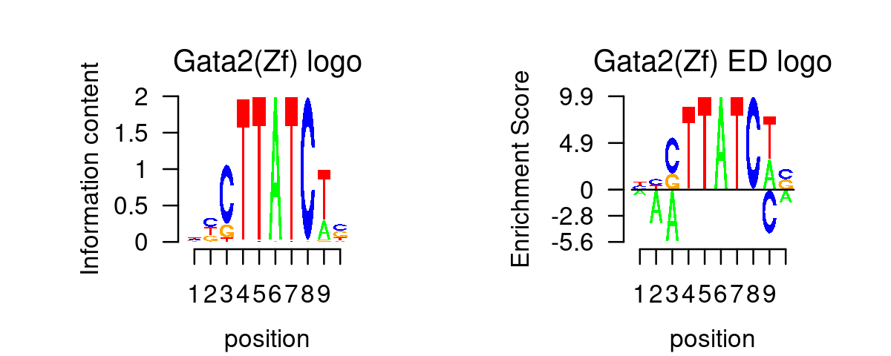
| Version | Author | Date |
|---|---|---|
| ac9ee61 | kevinlkx | 2021-01-28 |

| Version | Author | Date |
|---|---|---|
| ac9ee61 | kevinlkx | 2021-01-28 |
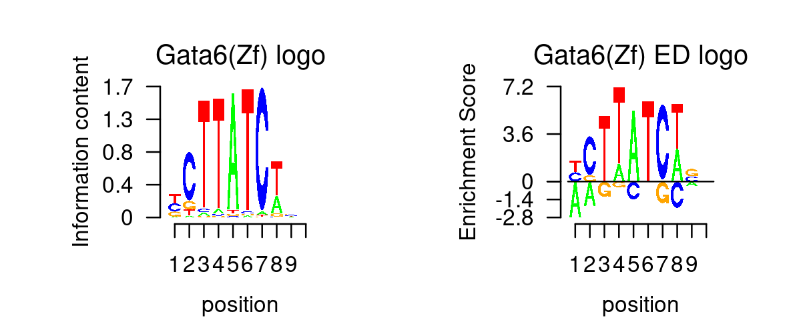
| Version | Author | Date |
|---|---|---|
| ac9ee61 | kevinlkx | 2021-01-28 |
# The PWM of the motif (GATA3(Zf),DR4/iTreg-Gata3-ChIP-Seq(GSE20898)/Homer) was not in HOMER output of enriched motifs.- Plot motif enrichment (-log10 p-value) and gene scores
plots <- create_motif_gene_scatterplot(motif_res, gene_scores,
motif_names, gene_names,
selected_genes = GATA_genes,
y = "-log10(p-value)",
colors = colors_topics,
max.overlaps = 10)
do.call(plot_grid,plots)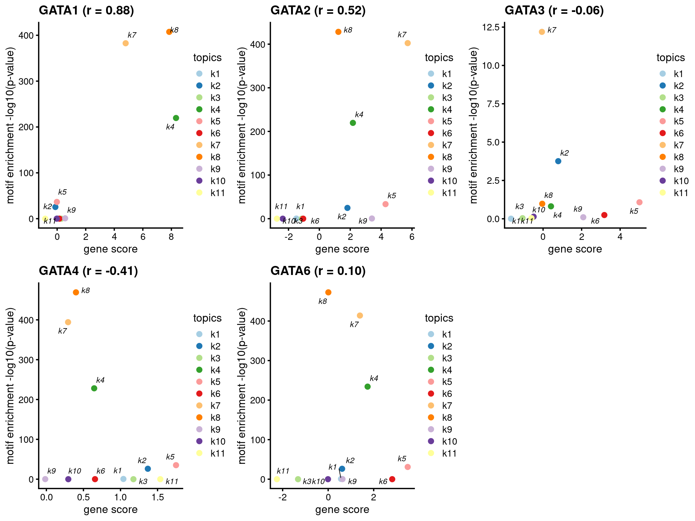
| Version | Author | Date |
|---|---|---|
| ac9ee61 | kevinlkx | 2021-01-28 |
- Plot motif enrichment (zscore) and gene scores
plots <- create_motif_gene_scatterplot(motif_res, gene_scores,
motif_names, gene_names,
selected_genes = GATA_genes,
y = "z-score",
colors = colors_topics,
max.overlaps = 10)
do.call(plot_grid,plots)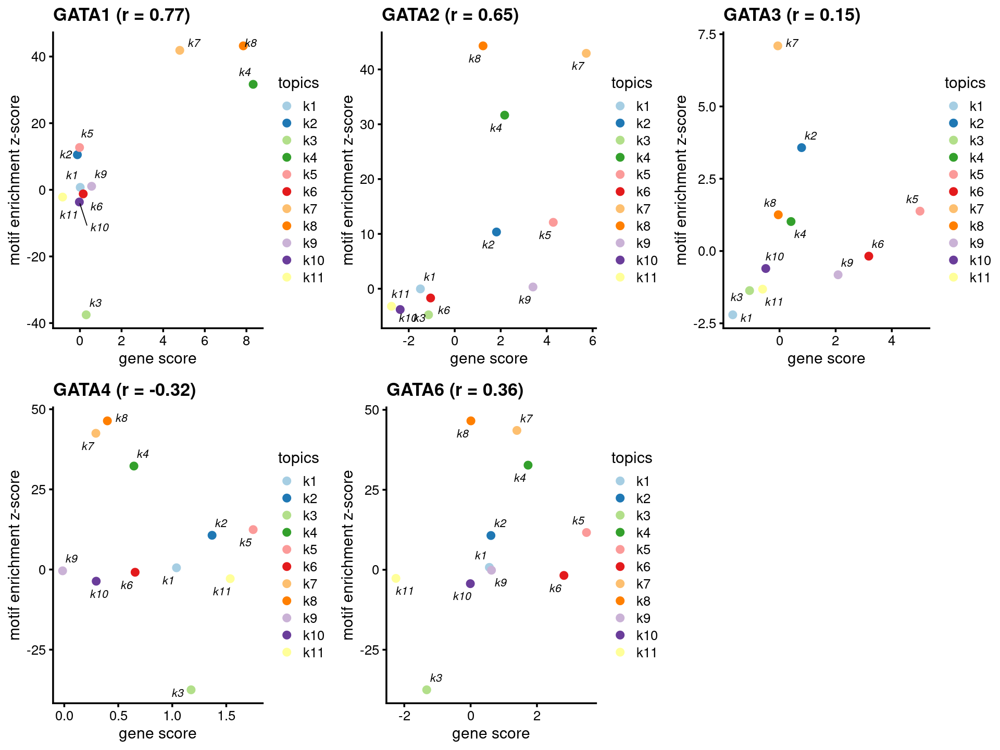
| Version | Author | Date |
|---|---|---|
| ac9ee61 | kevinlkx | 2021-01-28 |
sessionInfo()# R version 3.6.1 (2019-07-05)
# Platform: x86_64-pc-linux-gnu (64-bit)
# Running under: Scientific Linux 7.4 (Nitrogen)
#
# Matrix products: default
# BLAS/LAPACK: /software/openblas-0.2.19-el7-x86_64/lib/libopenblas_haswellp-r0.2.19.so
#
# locale:
# [1] LC_CTYPE=en_US.UTF-8 LC_NUMERIC=C
# [3] LC_TIME=en_US.UTF-8 LC_COLLATE=en_US.UTF-8
# [5] LC_MONETARY=en_US.UTF-8 LC_MESSAGES=en_US.UTF-8
# [7] LC_PAPER=en_US.UTF-8 LC_NAME=C
# [9] LC_ADDRESS=C LC_TELEPHONE=C
# [11] LC_MEASUREMENT=en_US.UTF-8 LC_IDENTIFICATION=C
#
# attached base packages:
# [1] grid stats graphics grDevices utils datasets methods
# [8] base
#
# other attached packages:
# [1] Logolas_1.3.1 reshape2_1.4.3 DT_0.16 htmlwidgets_1.5.3
# [5] plotly_4.9.2.1 cowplot_1.1.0 ggrepel_0.9.0 ggplot2_3.3.3
# [9] tidyr_1.1.2 dplyr_1.0.2 fastTopics_0.4-6 Matrix_1.2-18
# [13] workflowr_1.6.2
#
# loaded via a namespace (and not attached):
# [1] nlme_3.1-140 mcmc_0.9-7 matrixStats_0.57.0 fs_1.3.1
# [5] bit64_4.0.5 progress_1.2.2 httr_1.4.2 rprojroot_2.0.2
# [9] tools_3.6.1 R6_2.5.0 irlba_2.3.3 lazyeval_0.2.2
# [13] colorspace_2.0-0 ade4_1.7-16 withr_2.4.0 tidyselect_1.1.0
# [17] prettyunits_1.1.1 bit_4.0.4 compiler_3.6.1 git2r_0.27.1
# [21] quantreg_5.75 SparseM_1.78 labeling_0.4.2 scales_1.1.1
# [25] SQUAREM_2021.1 quadprog_1.5-8 mixsqp_0.3-43 stringr_1.4.0
# [29] digest_0.6.27 rmarkdown_2.6 MCMCpack_1.4-9 pkgconfig_2.0.3
# [33] htmltools_0.5.0 invgamma_1.1 rlang_0.4.10 generics_0.1.0
# [37] farver_2.0.3 jsonlite_1.7.2 crosstalk_1.1.0.1 magrittr_2.0.1
# [41] Rcpp_1.0.6 munsell_0.5.0 ape_5.4-1 lifecycle_0.2.0
# [45] CVXR_1.0-9 stringi_1.5.3 whisker_0.4 yaml_2.2.1
# [49] MASS_7.3-53 Rtsne_0.15 plyr_1.8.6 parallel_3.6.1
# [53] promises_1.1.1 crayon_1.3.4 lattice_0.20-41 hms_1.0.0
# [57] knitr_1.30 pillar_1.4.7 seqinr_4.2-5 glue_1.4.2
# [61] evaluate_0.14 data.table_1.13.6 RcppParallel_5.0.2 vctrs_0.3.6
# [65] httpuv_1.5.4 MatrixModels_0.4-1 gtable_0.3.0 purrr_0.3.4
# [69] ashr_2.2-47 xfun_0.19 gridBase_0.4-7 Rmpfr_0.8-2
# [73] coda_0.19-4 later_1.1.0.1 viridisLite_0.3.0 truncnorm_1.0-8
# [77] tibble_3.0.5 conquer_1.0.2 gmp_0.6-2 ellipsis_0.3.1